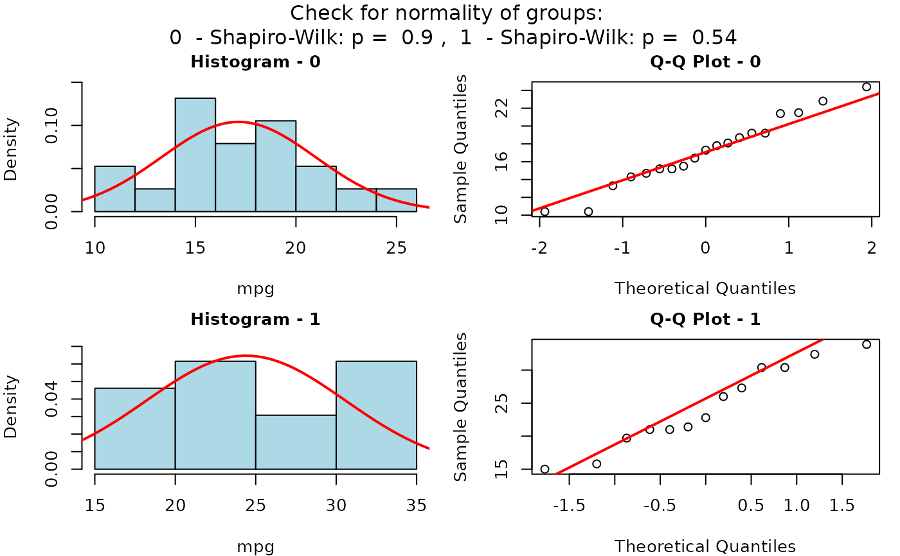
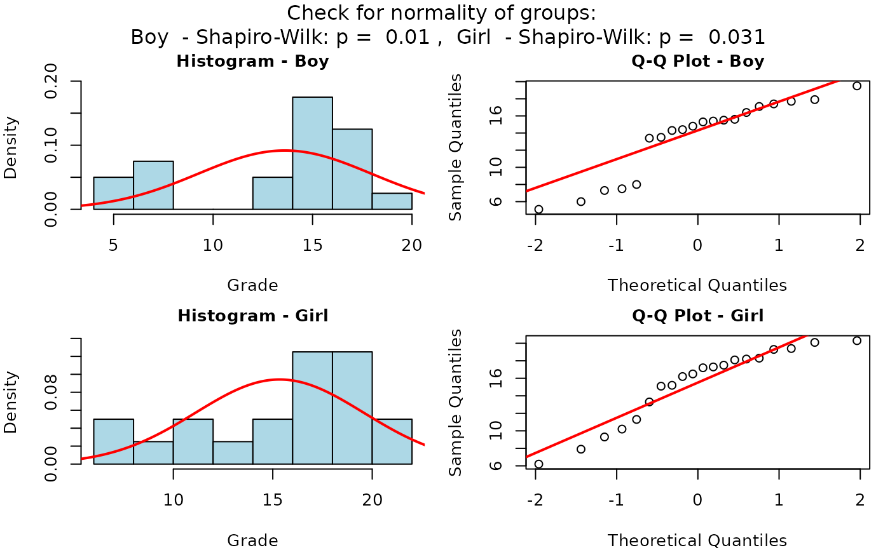
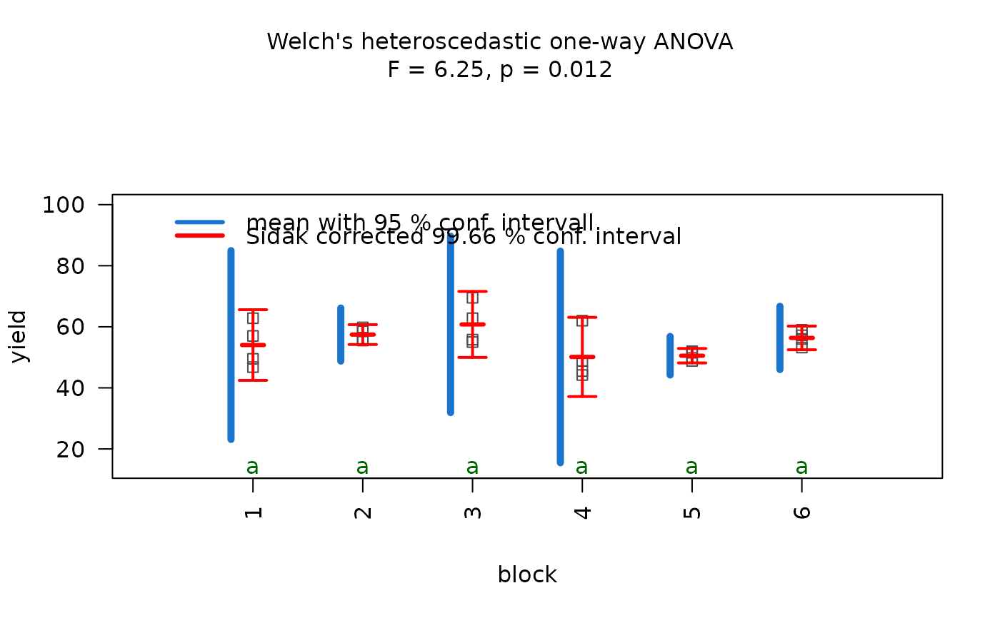

Visualization of statistical hypothesis testing based on decision tree
visstat.RdBased on a decision tree, visstat() picks the statistical hypothesis test with the highest statistical
power between the dependent variable (response) and the independent variable (feature)
in a data.frame named dataframe.
Data in the provided dataframe must be structured column wise,
where varsample and varfactor are character strings corresponding to the column names
of the dependent and independent variable respectively.
visstat( dataframe, varsample, varfactor, conf.level = 0.95, numbers = TRUE, minpercent = 0.05, graphicsoutput = NULL, plotName = NULL, plotDirectory = getwd() )
Arguments
| dataframe |
|
|---|---|
| varsample | column name of the dependent variable in |
| varfactor | column name of the independent variable in |
| conf.level | confidence level of the interval. |
| numbers | a logical indicating whether to show numbers in mosaic count plots. |
| minpercent | number between 0 and 1 indicating minimal fraction of total count data of a category to be displayed in mosaic count plots. |
| graphicsoutput | saves plot(s) of type "png", "jpg", "tiff" or "bmp" in directory specified in |
| plotName | graphical output is stored following the naming convention "plotName.graphicsoutput" in |
| plotDirectory | specifies directory, where generated plots are stored. Default is current working directory. |
Value
list containing statistics of test with highest statistical power meeting assumptions. All values are returned as invisibly copies. Values can be accessed by assigning a return value to visstat.
Details
For each test visstat() returns both a graph with the main test statistics
in its title as well as a list of the test statistics including eventual post-hoc analysis.
Implemented tests: lm(),t.test(), wilcox.test(),
aov(), kruskal.test(), fisher.test(), chisqu.test().
Implemented tests for normal distribution of standardized residuals: shapiro.test() and ad.test().
Implemented post-hoc tests: TukeyHSD() for aov() and pairwise.wilcox.test() for kruskal.test().
For the comparison of averages, the following algorithm depends on the value of the parameter of conf.level, which defaults to 0.95.
If the p-values of the standardized residuals of shapiro.test() or ks.test() are smaller
than the error probability 1-conf.level, kruskal.test() resp. wilcox.test() are performed, otherwise the oneway.test()
and aov() resp. t.test() are performed and displayed.
Exception: If the sample size is bigger than 100, wilcox.test() is never executed,instead always the t.test() is performed (Lumley et al. (2002)
<doi:10.1146/annurev.publheath.23.100901.140546>).
For the test of independence of count data, Cochran's rule (Cochran (1954) <doi:10.2307/3001666>) is implemented:
If more than 20 percent of all cells have a count smaller than 5, fisher.test() is performed and displayed, otherwise the chisqu.test().
In both cases case an additional mosaic plot showing Pearson's residuals is generated.
Examples
## Welch Two Sample t-test (calling t.test()) visstat(mtcars,"mpg","am")## Wilcoxon rank sum test (calling wilcox.test()) grades_gender <- data.frame( Sex = as.factor(c(rep("Girl", 20), rep("Boy", 20))), Grade = c(19.3, 18.1, 15.2, 18.3, 7.9, 6.2, 19.4, 20.3, 9.3, 11.3, 18.2,17.5,10.2,20.1,13.3,17.2,15.1,16.2,17.3, 16.5, 5.1, 15.3, 17.1, 14.8, 15.4, 14.4, 7.5, 15.5, 6.0,17.4, 7.3, 14.3,13.5,8.0,19.5,13.4,17.9,17.7,16.4,15.6)) visstat(grades_gender,"Grade", "Sex")## One-way analysis of means (oneway.test()) anova_npk=visstat(npk,"yield","block")anova_npk #prints summary of tests#> $`summary statistics_anova` #> Df Sum Sq Mean Sq F value Pr(>F) #> fact 5 343.3 68.66 2.318 0.0861 . #> Residuals 18 533.1 29.61 #> --- #> Signif. codes: 0 ‘***’ 0.001 ‘**’ 0.01 ‘*’ 0.05 ‘.’ 0.1 ‘ ’ 1 #> #> $`summary statistics_oneway` #> #> One-way analysis of means (not assuming equal variances) #> #> data: samples and fact #> F = 6.2463, num df = 5.0000, denom df = 8.0508, p-value = 0.01178 #> #> #> $adjusted_p_values_tuk #> Tukey multiple comparisons of means #> 95% family-wise confidence level #> #> Fit: aov(formula = samples ~ fact) #> #> $fact #> diff lwr upr p adj #> 2-1 3.425 -8.804242 15.654242 0.9440575 #> 3-1 6.750 -5.479242 18.979242 0.5166401 #> 4-1 -3.900 -16.129242 8.329242 0.9074049 #> 5-1 -3.500 -15.729242 8.729242 0.9390165 #> 6-1 2.325 -9.904242 14.554242 0.9893559 #> 3-2 3.325 -8.904242 15.554242 0.9503518 #> 4-2 -7.325 -19.554242 4.904242 0.4312574 #> 5-2 -6.925 -19.154242 5.304242 0.4900643 #> 6-2 -1.100 -13.329242 11.129242 0.9996936 #> 4-3 -10.650 -22.879242 1.579242 0.1094850 #> 5-3 -10.250 -22.479242 1.979242 0.1321421 #> 6-3 -4.425 -16.654242 7.804242 0.8539828 #> 5-4 0.400 -11.829242 12.629242 0.9999980 #> 6-4 6.225 -6.004242 18.454242 0.5981409 #> 6-5 5.825 -6.404242 18.054242 0.6604328 #> #> #> $conf.level #> [1] 0.95 #>## Kruskal-Wallis rank sum test (calling kruskal.test()) visstat(iris,"Petal.Width", "Species")visstat(InsectSprays,"count","spray")#> Warning: cannot compute exact p-value with ties#> Warning: cannot compute exact p-value with ties#> Warning: cannot compute exact p-value with ties#> Warning: cannot compute exact p-value with ties#> Warning: cannot compute exact p-value with ties#> Warning: cannot compute exact p-value with ties#> Warning: cannot compute exact p-value with ties#> Warning: cannot compute exact p-value with ties#> Warning: cannot compute exact p-value with ties#> Warning: cannot compute exact p-value with ties#> Warning: cannot compute exact p-value with ties#> Warning: cannot compute exact p-value with ties#> Warning: cannot compute exact p-value with ties#> Warning: cannot compute exact p-value with ties#> Warning: cannot compute exact p-value with ties## Linear regression visstat(trees,"Girth","Height",conf.level=0.99)## Pearson's Chi-squared test and mosaic plot with Pearson residuals ###Transform array to data.frame HairEyeColorDataFrame=counts_to_cases(as.data.frame(HairEyeColor)) visstat(HairEyeColorDataFrame,"Hair","Eye")## 2x2 contingency tables with Fisher's exact test and mosaic plot with Pearson residuals HairEyeColorMaleFisher = HairEyeColor[,,1] ### slicing out a 2 x2 contingency table blackBrownHazelGreen = HairEyeColorMaleFisher[1:2,3:4] blackBrownHazelGreen = counts_to_cases(as.data.frame(blackBrownHazelGreen)); fisher_stats=visstat(blackBrownHazelGreen,"Hair","Eye")fisher_stats #print out summary statistics#> $p.value #> [1] 0.503545 #> #> $conf.int #> [1] 0.07725895 2.40885255 #> attr(,"conf.level") #> [1] 0.95 #> #> $estimate #> odds ratio #> 0.5062015 #> #> $null.value #> odds ratio #> 1 #> #> $alternative #> [1] "two.sided" #> #> $method #> [1] "Fisher's Exact Test for Count Data" #> #> $data.name #> [1] "counts" #> #> $mosaic_stats #> Hair Brown Black #> Eye #> Hazel 25 10 #> Green 15 3 #>## Saving the graphical output in directory plotDirectory ## A) saving graphical output of type "png" in temporary directory tempdir() ## with default naming convention: visstat(blackBrownHazelGreen,"Hair","Eye",graphicsoutput = "png",plotDirectory=tempdir()) ##remove graphical output from plotDirectory file.remove(file.path(tempdir(),"chi_squared_or_fisher_Hair_Eye.png"))#> [1] TRUE#> [1] TRUE## B) Specifying pdf as output type: visstat(iris,"Petal.Width", "Species",graphicsoutput = "pdf",plotDirectory=tempdir()) ##remove graphical output from plotDirectory file.remove(file.path(tempdir(),"kruskal_Petal_Width_Species.pdf"))#> [1] TRUE## C) Specifiying plotName overwrites default naming convention visstat(iris,"Petal.Width","Species",graphicsoutput = "pdf", plotName="kruskal_iris",plotDirectory=tempdir()) ##remove graphical output from plotDirectory file.remove(file.path(tempdir(),"kruskal_iris.pdf"))#> [1] TRUE